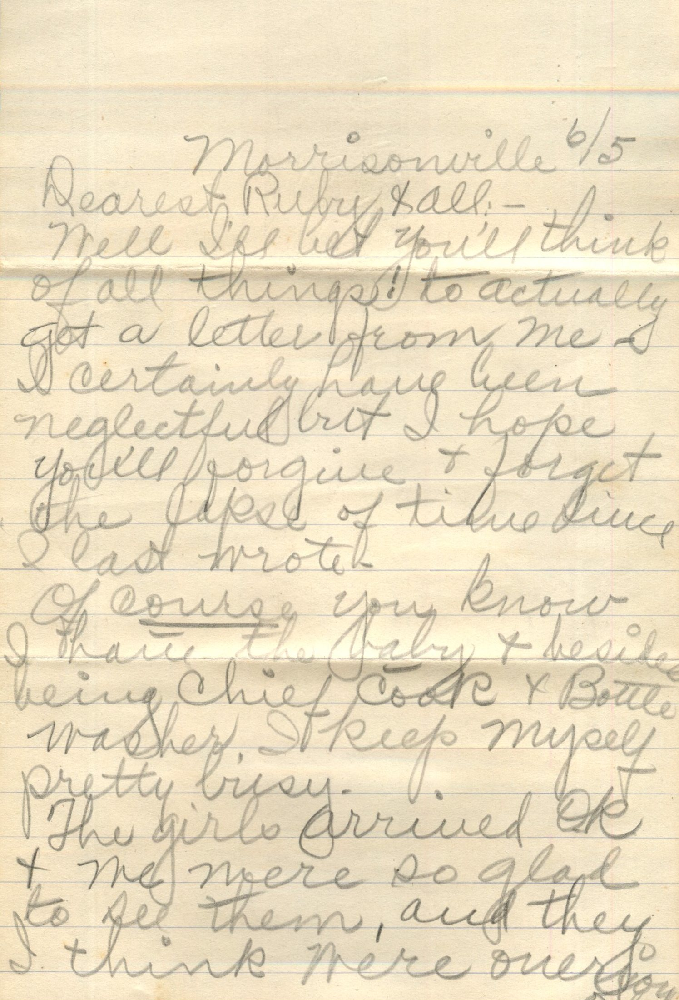
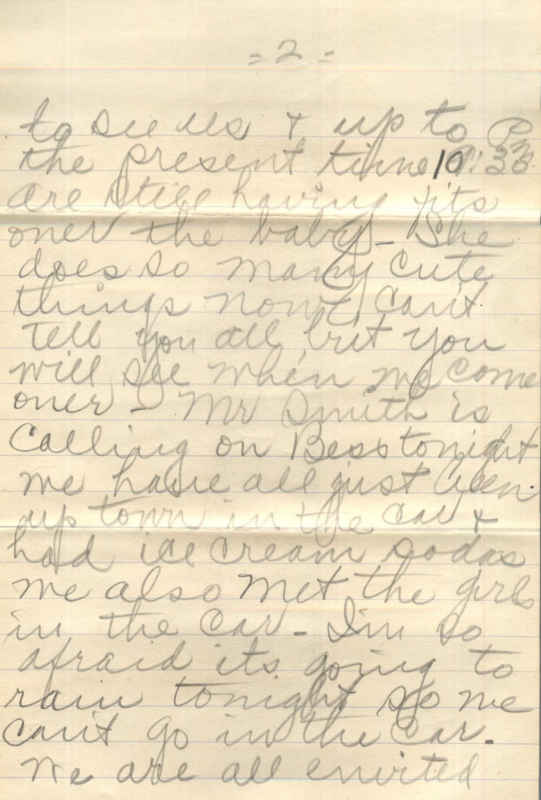

From: Frances Werb, To: Ruby Chandler


From: Frances Werb, To: Ruby Chandler Postcard Info: Made in Germany. F. B. Stumpf, Importer and Publisher, Eureka, Illinois Picture Info: Davidson Picnic Grounds, Eureka, Illinois
Dear Friend, Did you get home all right? I didn't get home until Sunday afternoon. Write, Frances Werb
From: Martin Chandler, To: Elijah H. Chandler and Family
From: Martin Chandler, To: Elijah H. Chandler Mailed From: Santa Margarita, CA on July 22
Santa Margarita July 22nd Dearest Papa and All, Just received letters from you, mama, Lucerne and Margaret fe minutes ago and was sure glad to get the. Wish they would come that way all the time. I wrote yo Mama few minutes ago and wrote to her day before yesterday in Morrisonville so guess she will get it soon after she gets there. Getting along OK on the job. Coping about 50 train orders last night and had 43 Expense Bills. Handle mail or 3 trains and sell tickets for 3 trains so there's generally enough to keep me busy. Like the job fine though. Theres lots of fellows here wanting to lay off and can't get relief. M en are awful scarce but in the winter time they close so many offices that it throws a whole bunch of men on extra board but extra work looks pretty good for this winter and if I earn to handle an agency by that time will be assured of almost steady work. These agencies pay big money too. Do you and Knox get any fish? That was a pretty good string you caught the other day. Bet Knox was tickled to yank them out. Wish I was there so could go squirrel hunting few times. Gee the girls sure are bathing lots berries. Hope Ruby is feeling better. Golly I haven't heard a piano for so long I've forgotten how one sounds. Hope Ralph will be able to go back to work soon. Too bad Micky had to take sick. Well the train is coming now that I want to get this off on so will close. Wish all of you would write. Hope everyone is OK. Will send Annie a card right away. Love to all, Martin
From: Ruby Chandler, To: Lucerne Chandler
From: Ruby Chandler, To: Lucerne Chandler
Mailed from: Peoria, Illinois on July 18
Lucerne Janet Chandler Pearl, Illinois
My Dear Little Sister, When any one says anything nice to us we sat "You should see what we left at home" e? We rode the merry-go-round yesterday so you know what a good time we had. Love to All, Ruby
From: Lul M., To: Bess Chandler

 From: Lul M., To: Bess Chandler
From: Lul M., To: Bess Chandler
Miss Bess Chandler Pearl, Illinois
Everything OK. My address is Firetaken Fence, Missouri. Am going to Kansas, Missouri on Sunday. Lul M.
From: Martin W. Chandler, To: John, Bess, and all


 From: Martin W. Chandler, To: John, Bess, and All
Mailed From: Sandpoint, Idaho on July 1
From: Martin W. Chandler, To: John, Bess, and All
Mailed From: Sandpoint, Idaho on July 1
Dear John, Bess, and All I've been threatening to write for the past three weeks and guess I'll get it down right now. We had quite a trip up this way. Made good time after leaving Lincoln. Another fellow and myself left the 40 and 8 camp the first of June. There was nothing around Chao in the way of work and we thought we'd come up here and prospect, expecting first to find some kind of job so we could get equipment to go into the hill with but work sure is scarce around this country and there are thousands and thousands of men up this way looking for work. Not exaggerating, there were at least 200 men on every freight train we rode this side of Omaha. Also saw several women riding the box cars. They climb right in with a gang of men in a box car and I guess that's their safest bet. We're camping here on a big lake. Have been for two weeks. Got a little hut of pine boughs and we catch more fish than we can eat. The lake is entirely surrounded by mountains and sure is pretty. Guess we'll stay here until the forest fires break out and then everybody will get a job. They say we can expect the first to start anytime now and the government hires every available man to fight 'em. I hear a person can earn anywhere from $25.00 up to $400.00, depending on duration of fire. The pay is $0.25 per hour, including Chuck, and your time usually runs about 20 hours a day. I'll certainly be glad to earn enough to pay the bills at Carroll and the ambulance and Doctor at Dunlap. It makes me heart sick to think of those bills and I suppose you folks are getting plenty of duns. Just as soon as I can possibly earn some dough I'll shoot it down that way. I thought at first that i'd stay at the 40 and 8 camp and be able to pay $15 a month on my debts but they only allow a man 30 days in camp now because there are so many waiting to get in. We came up through Sheridan, Wyo. Billings and Helena, Mont. and stopped off at Trout Creek, Mont., for couple days to fish. We went into mountains and camped by a dam nice trout stream but nights were too cold and we had no blankets. It was a real pretty place to camp, with a good spring close by and I'm going back there some day and camp a week or two. The first night we were there I got up about 1 am and built a big fire cause twas too cold to sleep. Then about 3:30 am, just as it was commencing to get day light, I went down to the spring for some water to make coffee. There was some kind of an animal at the spring getting a drink. Don't know what it was but think it was a young bear. It scurried away before I got a good look at it. If it had just stayed a second longer, I'd have done enough scurrying for both of us. We catch lots of trout, Crappie, and Perch out of this lake and its a big help, as it takes care of the meat problem, I wish I had a Kodak. There's some right pretty scenery around here. I was out on a log boom fishing other day and fell into lake. No damage done except to my temper. The lake water is as clear as a crystal and about 40 feet deep. Well guess I'll call this a letter and seal it up. I'm feeling great. Haven't been troubled any with my ulcer for past 6 weeks. Hope this finds all of you ok and that you have a good crop of corn. Address me here. Lovingly, Mart
PS. I heard about Margaret Anna's terrible time. I sure felt sorry for her. She must have suffered a lot. Hope she is completely recovered by now. Give them my love and my regards to Doc and Lillian. Bess, I'll send you a nugget soon as I go dig some up. MWC
Had a dandy letter from RK Chandler yesterday. I'm going to frame it.
From: Martin Chandler, To: Elijah H. Chandler and Family
From: Martin Chandler, To: Elijah H. Chandler
Mailed From: France on June 26th
France June 26th Dearest Papa, Mama, and all,
From: Unknown, To: Bess Chandler


From: Grace Chandler, To: Ruby and All


From: Grace Chandler, To: Ruby Chandler and All Mailed From: Morrisonville on June 5
Morrisonville 6/5 Dearest Ruby & all: - Well I'll bet you'll think of all things! To actually get a letter from me - I certainly have been neglectful but I hope you'll forgive and forget the laps of time since I last wrote. Of course you know I have the baby and besides being chief cook and Bottle Washer, it keeps myself pretty busy. The girls arrived OK and we were so glad to see them, and they I think were overjoyed to see us and up to PM the present time 10:30 are still having fits over the baby. She does so many cute things. We can't tell you all, but you will see when we come over. Mr. Smith is calling on Bess tonight. We have all just been up town in the car and had ice cream sodas. We also met the girls in the car. I'm so afraid it's going to rain tonight so we can't go in the car. We are all evicted down to mothers tomorrow for dinner. Bess will go to the city I guess about Thursday and Lucerne says she is going with her, but that wont be much of a visit. I made bread today for the first time since I was married and it was just lovely. The girls thot it was fine. We have been having strawberries pretty often. Had them tonight. Was too bad about Uncle Geo, wasn't it? So sad for Aunt Annie. Am glad Mama went out there. I'll bet it will be rather lonesome for you Ruby without the girls away. But Bess will woo be home. Gee! I sure do hate to see her leave. Don't suppose she will be home long either as she is going to big college this summer. Ruby you know how it is for me to write now. Wasn't to talk to the girls. So will tell you goodnight tonight. Hope Papa is well and the rest. Will write soon again- Love to all, Grace
From: Eugene, To: Bess Chandler

 From: Eugene, To: Bess Chandler
Mailed From: Roodhouse, Illinois on June 4
From: Eugene, To: Bess Chandler
Mailed From: Roodhouse, Illinois on June 4
Miss Bess Chandler Pearl, Illinois
Eugene